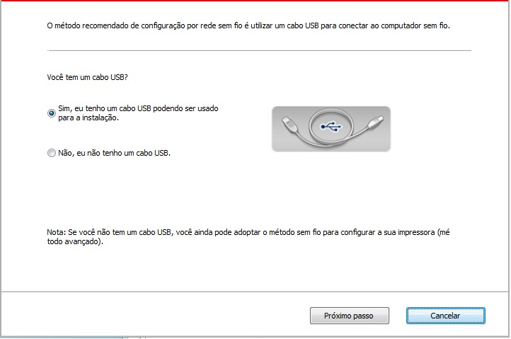
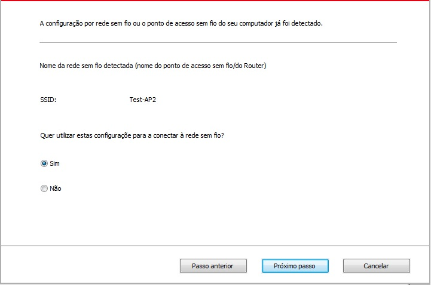
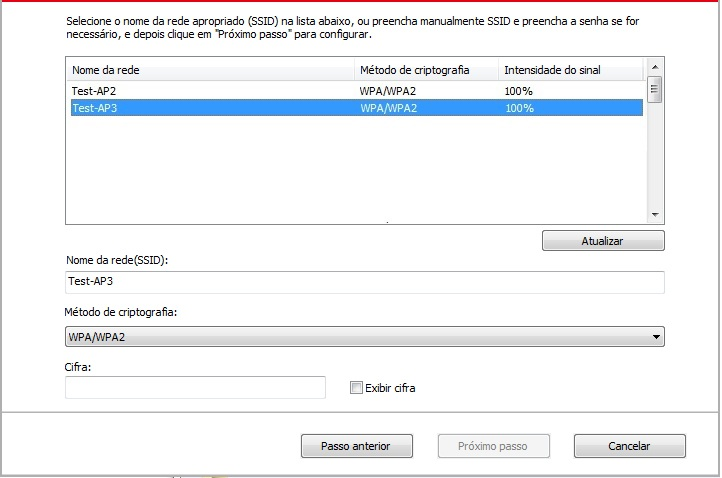
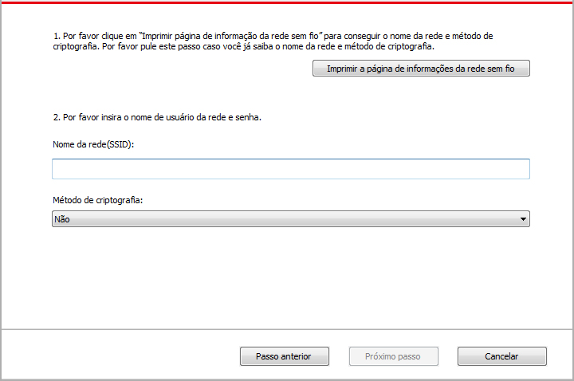
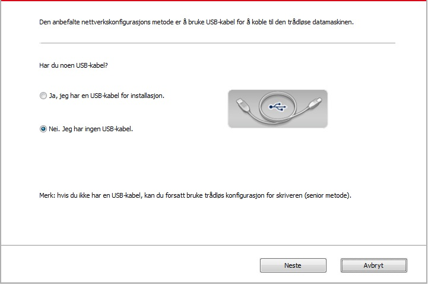
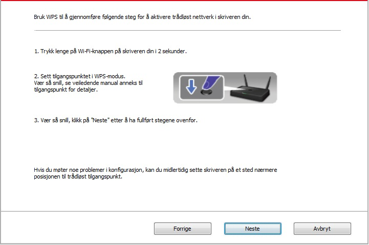
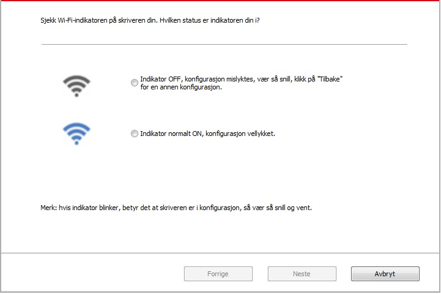

5.Configurações da rede sem fio (aplicável para o modelo Wi-Fi)
Dependendo do modelo, as impressoras com função de impressão de Wi-Fi suportam o modo de conexão de infra-estrutura e Soft-AP, dois tipos de conexão de rede sem fio, geralmente cada vez só pode haver uma conexão entre computador e impressora.Se você tiver problemas durante o processo de configuração da rede sem fio, por favor consulte os problemas frequentemente encontrados de configuração da rede sem fio descritos no Capítulo 5.3 .
 |
Modo de infra-estrutura: Conexão através de um roteador com um dispositivo sem fio 1. Ponto de acesso (roteador sem fio). 2. Impressora de rede sem fio. 3. Computador conectado ao ponto de acesso através da rede sem fio. 4. Computador conectado ao ponto de acesso através do cabo de rede. |
|
|
Soft-AP Conexão direta do computador sem fio com o dispositivo sem fio. |

5.1.Modo de Infra-estrutura
Você pode através do ponto de acesso (roteador sem fio) como um meio, conectar o computador à impressora. A conexão do ponto de acesso (roteador sem fio) divide-se em dois modos, ferramenta de configuração da rede sem fio e configuração de Protected Setup (WPS).
N.B.: antes de prosseguir a instalação de rede sem fio, deve conhecer o nome da rede (SSID) do seu ponto de acesso (roteador sem fio) e a senha, que precisam de ser usados na configuração da rede sem fio. Caso não seja capaz de confirmar, por favor consulte o seu administrador de rede ou fabricante do ponto de acesso (roteador sem fio).
5.1.1.Ferramentas de configuração da rede sem fio
Se o seu computador já instalar o driver e tiver sido conectado à rede sem fio, mas a rede sem fil for alterada, pode através da ferramenta de configuração da rede sem fio para a reconfiguração.
5.1.1.1.Assuntos preparatórios
1.Ponto de acesso (roteador sem fio).
2.Computador que já está ligado à rede.
3.Impressora com função de rede sem fio.
5.1.1.2.Método de configuração com ferramenta de configuração da rede sem fio
1.No computador chama-se a ferramenta de configuração da rede sem fio.
1）Sistema Windows: Clique no menu do Computador "Iniciar" - "Todos os Programas" - "Pantum" - "Nome do produto" - "Ferramenta de configuração da rede sem fio."
2）Sistema Mac: Clique na barra de menu Finder do computador "Ir para" - "Aplicações" - "Pantum" - "Utilities" - “Wireless Network Configuration Tool”.
2. Use o cabo do conector USB para conectar a configuração.
Na próxima interface, selecione "Sim, tenho um cabo USB a ser usado para a instalação". Clique em "Avançar".

2.1O computador foi conectado à rede sem fio.
1) A ferramenta de configuração de rede sem fio seleciona o computador atual padrão conectado à rede sem fio. Conclua a configuração de acordo com o prompt da interface.

 |
Nota: |
• O nome de rede que você seleciona (SSID) deve ser consistente com o nome de rede (SSID) do ponto de acesso conectado do computador (roteador sem fio). |
2) É necessário conectar-se a outra rede sem fio, por favor, marque "Não" para configurar outra rede sem fio. Conclua a configuração de acordo com o prompt da interface.

|
Nota： |
• Atualmente, há três tipos de modo de segurança suportados pela impressora: nenhum, WEP e WPA/WPA2. 1) Nenhum: não se usa nenhum modo de criptografia. 2) WEP: através de usar WEP (criptografia equivalente com fio), enviam-se e recebem-se com a chave de segurança. A chave WEP é aplicável para a rede de criptografia com 64 e 128 bits, que podem conter números e letras. 3) WPA/WPA2: é a chave pré-compartilhada de acesso de proteção de Wi-Fi, ele pode através de usar a criptografia TKIP ou AES (WPS-Personal) fazer a conexão do dispositivo sem fio com o ponto de acesso. É a chave pré-compartilhada cuja extensão de uso de WPA/WPA2 fica entre 8-63 caracteres (PSK). •A "exibição de senha" é pré-definida de não ser selecionada, se for selecionada, a senha digitada será exibida. |
2.2 O computador não foi conectado à rede sem fio.
Na seguinte interface, digite o nome da rede SSID (SSID sensível a maiúsculas e minúsculas) e a senha do ponto de acesso (roteador sem fio), conclua a configuração de acordo com o prompt da interface.

|
Nota： |
• Se você não souber o nome de rede (SSID) do ponto de acesso (roteador sem fio), clicar em "Imprimir a página de informações da rede sem fio" pode ver o nome de rede (SSID) do ponto de acesso (roteador sem fio) de que você precisa. • Após a conclusão da configuração estiver concluída, se a impressora não puder ser usada normalmente, por favor instale o driver de novo. |
3. Use o WPS para conexão.
Na seguinte interface, selecione "Não, eu não tenho um cabo conector USB." Clique em "Próximo".

1) Utilize o modo WPS para executar os seguintes passos e iniciar a rede sem fio na impressora. (Para a configuração específica WPS, por favor, consulte o Capítulo 5.1.2 )

2) Analise se uma impressora se conecta com êxito de acordo com o status do indicador Wi-Fi na impressora. Se a configuração falhar, clique em "Voltar" e configure novamente; Se a configuração for bem-sucedida, clique no botão "Concluir" e conclua a configuração.

|
Nota: |
• Após a conclusão da configuração estiver concluída, se a impressora não puder ser usada normalmente, por favor instale o driver de novo. |
5.1.2.Configuração do Wi-Fi Protected Setup (WPS)
Se o ponto de acesso (roteador sem fio) suportar Wi-Fi Protected Setup (WPS), pode pressionar respetivamente a tecla Wi-Fi no painel de controle da impressora e a tecla WPS no ponto de acesso (roteador sem fio), de modo a conectar a impressora à rede sem fio.
5.1.2.1. Assuntos preparatórios
1. O ponto de acesso (roteador sem fio) suporta o Wi-Fi Protected Setup (WPS).
2. Impressora com função de rede sem fio.
5.1.2.2.Modo de configuração do Wi-Fi Protected Setup (WPS)
1. Ligue as fontes de alimentação da impressora e do ponto de acesso (roteador sem fio).
2. Certifique-se de que a impressora está pronta.
|
Nota: |
• Se a impressora entrar no estado de dormir, pressione qualquer tecla do painel de controle da impressora, então a impressora irá-se acordar. |
3. Pressione a "Tecla Wi-Fi" no painel de controle da impressora por mais de 2 segundos, até a luz azul de Wi-Fi da impressora piscar-se, em seguida liberte-a.
4. Dentro de 2 minutos, pressione a "Tecla WPS" no ponto de acesso (roteador sem fio) , em seguida liberte-a.
5. O ponto de acesso (roteador sem fio) e a impressora começam a executar a conexão sem fio, a luz azul de Wi-Fi pisca-se. Após a conexão bem-sucedida, a luz azul de Wi-Fi ilumina-se normalmente.
Se por mais de 2 minutos a conexão não estiver bem estabelecida, a impressora retornará ao estado pronto, a luz Wi-Fi apaga-se, a conexão de Wi-Fi Protected Setup (WPS) falha-se. Se for preciso se reconectar, por favor repita os passos 3-4.
Nota: |
• Após a conexão do Wi-Fi Protected Setup (WPS) bem sucedida, se você quiser imprimir através do modo de rede sem fio, por favor instale o driver. |
5.1.3.Como desligar a rede Wi-Fi conectada
Siga os passos acima para concluir a conexão à rede sem fio do modo de infra-estrutura, a luz Wi-Fi no painel de controle no estado ligado irá-se iluminar normalmente, neste momento pressionar o botão por mais de 2 segundos pode desligar a conexão Wi-Fi (a luz Wi-Fi irá-se apagar).
5.2.Modelo de hotspots Wi-Fi
Você pode estabelecer a conexão de um computador sem fio a uma rede sem fio da impressora Wi-Fi sem a necessidade de um ponto de acesso (roteador Wi-Fi).
5.2.1.Assuntos preparatórios
1. Impressora com as funções de hotspots Wi-Fi.
2. Computadores com função de rede sem fio.
5.2.2.Conexão Wi-Fi Básica
Ative o Wi-Fi Hotspot da impressora antes de conecta-la. Para isso, inicie a sessão no servidor da Web integrado, clique em "Configuração" - "Configuração sem fio" - "Sem fio hot para definir o status do hotspot como "Ativado".
5.2.3.Método de configuração de hotspots Wi-Fi
Quando os hotspots sem fio da impressora estiveriem no estado de ativação, os usuários podem construir a conexão diretamente com eles pesquisando os hotspots sem fio de uma impressora. Os hotspots sem fios estão em estado aberto por predefinição e a palavra passe predefinida é "12345678". O SSID e a senha específicos da impressora podem ser obtidos através da impressão da "página de informações de configuração Wi-Fi". Após a conexão, consulte o método de configuração Web e a configuração poderá ser concluída.
5.3.Problemas frequentemente encontrados na configuração da rede sem fio
1. Impressora não encontrada
• Se o computador, o ponto de acesso (roteador sem fio) ou a impressora está ligada.
• Se entre o computador e a impressora o cabo de conexão USB já está ligado.
• Se a impressora suporta a conexão de rede sem fio.
2. Na conexão de rede, não se encontra o nome de rede (SSID)
• Verifique se o interruptor da fonte de alimentação do ponto de acesso (roteador sem fio) já está aberto.
• Não é possível encontrar o nome de rede (SSID) do ponto de acesso (roteador sem fio) que você precisa de conectar, por favor verifique o nome de rede (SSID) do ponto de acesso e tente reconectar.
• Sempre que a configuração do ponto de acesso (roteador sem fio) aconteça alterações, você deve redefinir a rede sem fio da impressora.
3. Falha de conexão
• Por favor verifique se o modo de segurança, a senha do ponto de acesso (roteador sem fio) e da impressora estão corretos.
• Verifique a recepção sem fio à volta da impressora. Caso o roteador fique longe da impressora ou haja obstáculo no meio, é possível afectar a recepção do sinal.
• Desligue as fontes de alimentação do ponto de acesso (roteador sem fio) e da impressora, em seguida, faça a configuração após o reinício.
4. Se você tiver problemas ao usar a impressora na rede, por favor verifique os seguintes aspetos:
• Verifique se o software de firewall está bloqueando a comunicação. Se o computador e a impressora estiverem conectados na mesma rede, mas não for possível se encontrar, pode ser o bloqueio de comunicação pelo software de firewall. Por favor consulte o guia do usuário do software de firewall, irá desativar o firewall, e em seguida, tente pesquisar a impressora novamente.
• Verifique se a atribuição de endereço IP da impressora está correta. Você pode imprimir a página de configuração da rede da impressora para verificar o endereço IP.
• Por favor, consulte os seguintes passos para verificar se a impressora e o Computador estão na mesma rede.
1) Selecione “Command prompt" como mostrado abaixo
a. Sistema Windows 8/10 : Selecione o botão "Pesquisar" no menu Iniciar e digite " “Command prompt ” na barra de pesquisa, em seguida , pressione a tecla "Enter".
b. Sistema Windows 7/Vista/XP : clique no menu "Iniciar" - "Todos os procedimentos" - "Anexo" - " Command prompt ".
2) Digite ping e o endereço IP da sua impressora na janela pop-up e pressione "Enter".
Por exemplo: ping XXX.XXX.XXX.XXX (“XXX.XXX.XXX.XXX” é o endereço IP da impressora)
3) Se aparecer RTT na janela, isto significa que a sua impressora e o seu Computador estão na mesma rede.Se não aparecer RTT na janela, consulte o Capítulo 5 para reconfigurar a rede sem fio da impressora.
Nota: |
• Para mais informações sobre o ponto de acesso (roteador sem fio), por favor consulte na respetiva guia do usuário ou ao respetivo fabricante. |